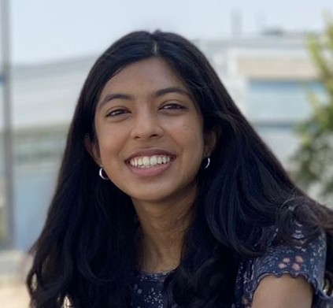

About Me
My goal this year is to learn more about what engineering truly is and the applications of this field, especially in areas I am interested in such as aerospace and mechanical engineering. I have developed a burning curiosity for how vehicles in space and on land are designed and what it takes to make a safe, efficient physical system. As computer science becomes increasingly important, I also hope to develop a set of skills that allows me to combine coding and physical aspects of engineering together. I aspire to innovate and solve problems with my engineering knowledge, as well as communicate it to the world around me. Problem solving skills, verbal communication, and analytical thinking are crucial aspects of success. I have accumulated skills like knowledge about modern technology and coding and being observant of my surroundings. With this, I have been able to process challenging concepts with ease and apply them to aspects of my environment. In high school, I have the ability to learn and communicate concepts despite their challenges because I am willing to overcome difficulty and make mistakes. I am a youth volunteer for Lindsay Wildlife Experience and the AAUW (American Association of University Women), and I share my scientific knowledge with the public and learn about various environmental issues. To challenge myself, I joined Gael Force Robotics and I have been a member of the competition team 5327S since 2020, where I attend competitions and assist my team captain in designing a robotic system that performs various functions in a game. I am taking Principles of Engineering to learn about the variety of areas in engineering and how to view the world through the lens of an engineer. My exposure to these activities has taught me how to communicate my observations to others and design a system that can be utilized for multiple purposes. My experiences have taught me that it takes an open mind and perseverance to study engineering or any part of science, and the process of innovating is an extensive cycle that requires one to constantly ask questions. On that note, I hope to pursue my career in engineering and achieve my goals in DEDA.
Contact information
Email: saminivi@gmail.com
Dublin, CA